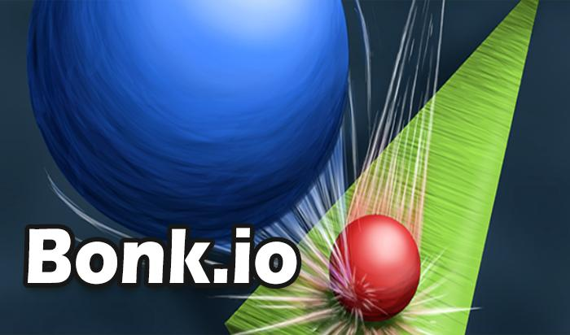
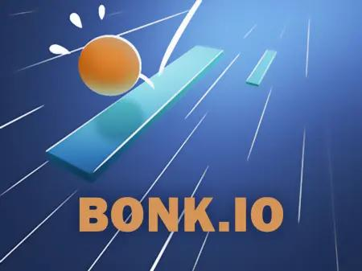
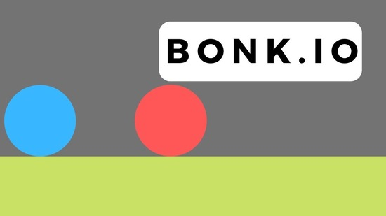

Bonk.io is a physics-based multiplayer game where up to eight players control round characters and try to knock each other off the map. No health bars, no weapon pickups — just pure momentum, mass, and positioning. The last ball standing wins. Sounds simple? It's not. The physics engine rewards split-second timing, spatial awareness, and knowing exactly when to go heavy. This guide breaks down every mechanic so you stop getting launched into the void.
🎯 Game Basics

Objective
Push every other player off the platform edges. Your ball and opponents bounce, slide, and collide on a 2D arena filled with platforms, spikes, and hazards. Touch the void below and you're eliminated for the round. Simple rules, chaotic outcomes.
Why Bonk.io Works
Three systems stacked together create the gameplay loop:
- Physics engine — Real mass, momentum, friction, and angular velocity. Collisions feel like billiard balls, not arcade floatiness.
- Heavy mode — Trade acceleration for ramming power. Timing is everything.
- Platform edges — The kill zone. Cross the edge and you're done.
Strip any one layer out and the game falls flat. Stack them together and you get matches that swing between careful positioning and total chaos in seconds.
🎮 Controls
Desktop / Laptop
| Action | Key |
|---|---|
| Move left / right | Arrow keys ← → |
| Jump | Arrow key ↑ |
| Move down / crouch | Arrow key ↓ |
| Activate heavy mode | Hold X |
Mobile / Tablet
| Action | Control |
|---|---|
| Move | Tap or swipe on screen |
| Activate weight | On-screen weight button |
Use short taps instead of long holds on the arrow keys. Over-steering clips you into bad angles, especially near edges.
⚙️ Physics Mechanics

Mass & Momentum
Every ball has mass. When two balls collide, the heavier one pushes the lighter one harder, and the heavier ball's velocity stays more intact. Think of it like a bowling ball hitting a tennis ball.
Collision Angles
How you hit matters as much as how hard you hit:
- Perpendicular hit — Maximum energy transfer. The cleanest knockout angle.
- Glancing blow — Barely transfers energy. You'll bounce off without much effect.
- Finding the angle — Approach from the side, not head-on, when possible.
Friction
Bonk.io uses higher friction than real-world physics. Balls slow down faster after contact than you'd expect. This means momentum from a collision doesn't carry you forever — you'll need to readjust quickly.
Platform Edge = Death
Anything that crosses the platform edge falls into the void. On square maps, corners are kill zones. On circular maps, the entire perimeter is dangerous. On rotating platforms, the edges shift constantly, turning safe spots into traps.
🏟️ Game Modes
| Mode | Match Length | Best For |
|---|---|---|
| Quick Play | 3 to 8 minutes | Casual drop-in matches. Reactive play. |
| Bonk Leagues | 10 to 15 minutes (best-of-5) | Ranked competitive play. Climb the ladder. |
| Private Lobbies | Variable | Custom maps, friend matches. Set your own rules. |
Map Variety
Bonk.io has dozens of official maps and thousands of community-created ones. Maps range from flat platforms to complex layouts with moving parts, spikes, lava pits, and shrinking zones. Each map demands different positioning and timing.
💪 Mastering Heavy Mode

Heavy mode is the single most important mechanic in Bonk.io. Hold X and your ball becomes heavier — you push harder on collision and resist being pushed. But you also lose acceleration, meaning you can't chase or course-correct while heavy.
The Three Rules of Heavy Mode
- Activate before contact, not during it. The sweet spot is 200-300 milliseconds before impact. Release immediately after the bump to recover acceleration.
- Never go heavy in the air. Falling heavy just means falling faster. Save it for platform contact.
- Don't hold it too long. Heavy for too long makes you a slow, predictable target. Tap it, hit, release.
Heavy Mode Mistakes to Avoid
- Going heavy from far away — you arrive slow and get dodged
- Holding heavy while chasing — you lose speed and they escape
- Going heavy on reaction — by the time you see them coming, it's too late
💎 Pro Tips
Take the center before hunting knockouts. Center position gives you escape routes in every direction. Most early eliminations happen to players who drift wide too soon.
Don't force every collision. Let a charging player slide past, then tag them during recovery. A clean dodge often creates an easier second opportunity than a risky head-on clash.
When several players stack into one collision, escape first and re-enter second. Stacked hits are unpredictable. Clean re-entry beats fighting inside the chaos.
Stay light near edges for quick recovery. Heavy mode is great for offense but terrible for defense at the edge. Switch to light the moment you feel yourself drifting toward the void.
Don't rush in immediately. The first few seconds of each round are chaos — let others commit, read the spacing, then move. Early chaos punishes blind aggression.
❓ Frequently Asked Questions
What is Bonk.io?
A physics-based multiplayer .io game where players control round characters and try to knock opponents off the map. Created by Chaz, it launched in 2016 and transitioned from Flash to HTML5 in 2021. Up to 8 players per match.
Is Bonk.io free to play?
Yes, completely free in any web browser. No downloads, no installs. Works on desktop, laptop, tablet, and mobile browsers.
How do I make my ball heavier?
Hold the X key on desktop, or tap the weight button on mobile. This increases your mass temporarily, giving you more knockback power but less movement speed.
Can I create custom maps?
Yes! Bonk.io has a built-in map editor. Create your own arenas or play on millions of community-made maps. The map editor is one of the game's biggest strengths.
What's the best strategy for beginners?
Stay near center, don't rush in first, practice heavy mode timing. Focus on survival rather than knockouts early on. Watch how experienced players position themselves and learn from their movements.
Can I play with friends?
Yes. Create a private lobby and share the room code. You can set custom rules, pick specific maps, and play however you like.
📝 Conclusion
Bonk.io strips multiplayer combat down to its purest form: physics, positioning, and timing. No weapons, no upgrades, no cooldowns — just you, your opponents, and the edge of the platform. Master heavy mode, read collision angles, and control the center. The rest follows naturally.
Ready to bonk? Jump into Bonk.io and start climbing the leaderboard!
Last updated: June 12, 2026
Written by the iogameguide.com team